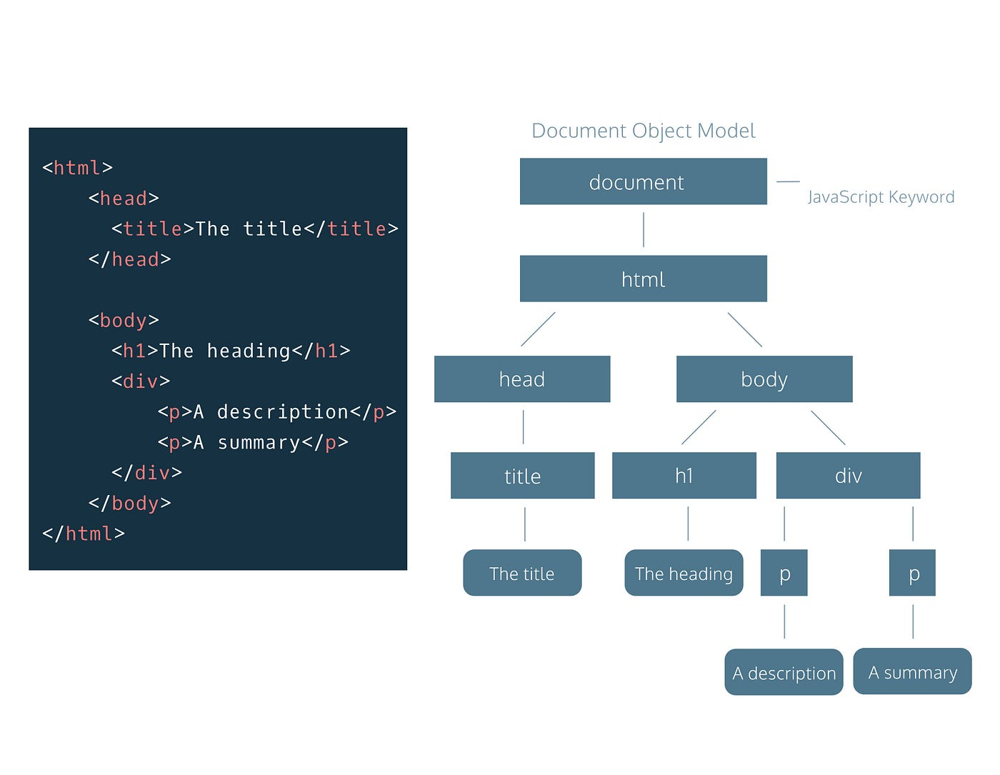
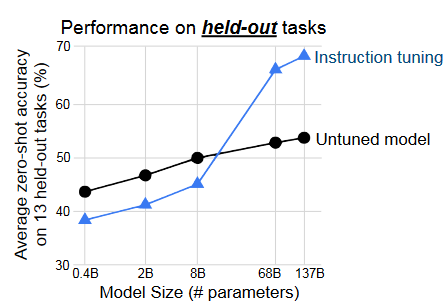
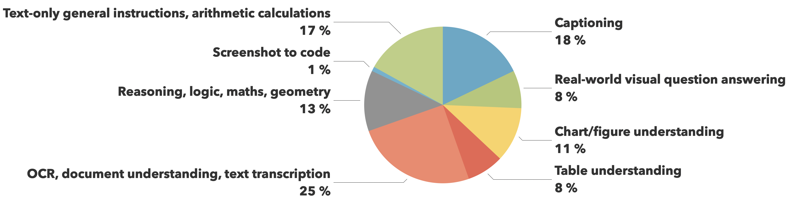

by Johannes Kunath
What kind of multimodal datasets exist?
What tasks do they contain?
How are they created?
Which data mixtures are recommended for multimodal instruction-tuning?
How to evaluate your dataset?
What kind of multimodal datasets exist?
Docmatix for Document VQA used for fine-tuning Idefics3
SEED-163K used for tuning MMEvol
CheXpert for x-ray image analysis
9.000.000 Q/A pairs
224,316 chest radiographs
Laion-5B Open-Source
5.800.000.000 image-text pairs
Image-Text pairs
OBELICS
115B Texttokens 353M Images
Interleaved image-text web documents
Interleaved Image-Text
capture visual-textual associations within context of documents
Efficient Learning with Less Data
What kind of multimodal datasets exist?
What tasks do they contain?
How are they created?
Which data mixtures are recommended for multimodal instruction-tuning?
How to evaluate your dataset?
What tasks do they contain?
What kind of multimodal datasets exist?
What tasks do they contain?
How are they created?
Which data mixtures are recommended for multimodal instruction-tuning?
How to evaluate your dataset?
How are they created?
Example: OBELICS
simplified Version
Example: OBELICS
0.3% of Docs left... but Quantity ≠ Quality
Increased complexity
What kind of multimodal datasets exist?
What tasks do they contain?
How are they created?
Which data mixtures are recommended for multimodal instruction-tuning?
How to evaluate your dataset?
Which data mixtures are recommended for multimodal instruction-tuning?
Dataset requirements
High Diversity and Variety in Data Sources
Combining Different modalities
Combining Different Task Types enhance the versatility
Eample on task distrubution
What kind of multimodal datasets exist?
What tasks do they contain?
How are they created?
Which data mixtures are recommended for multimodal instruction-tuning?
How to evaluate your dataset?
How to evaluate your dataset?
How to evaluate your dataset?
Evaluation metrics
Data Quality Assessment
Source Diversity
Data Processing Pipeline
Dataset Format and Flexibility
Exmaple: OmniCorps